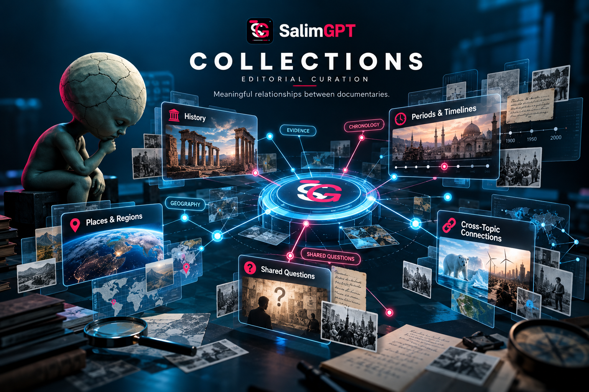
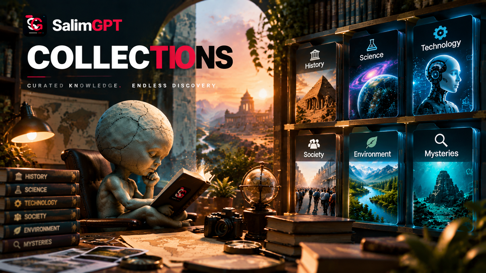

Research Themes
Documentaries can be grouped around a shared research theme even when they involve different places, periods or subject areas.
CURATED DISCOVERY
Explore curated groups of SalimGPT documentaries connected by a shared question, theme, place, period, subject, research relationship or another meaningful editorial connection.
Collections are flexible discovery pathways rather than fixed categories. A documentary can belong to more than one collection, and new collections can be created whenever a group of documentaries benefits from being explored together.

HOW COLLECTIONS WORK
A collection may bring together documentaries that would otherwise appear under different topics or discovery paths. The examples below describe possible relationships, not a fixed collection system.
Documentaries can be grouped around a shared research theme even when they involve different places, periods or subject areas.
A collection may connect documentaries through one location, region, environment, community or geographic relationship.
Documentaries may be brought together because they illuminate one historical period, sequence of events or long-term transition.
Separate documentaries can explore different parts of one larger question, debate, problem or field of inquiry.
History, science, society, technology and other subjects can be combined when understanding the subject requires more than one field.
A collection can also be built around a highly specific subject when several documentaries reveal different dimensions of the same small area.
FLEXIBLE, NOT FIXED
SalimGPT collections are not intended to become a rigid taxonomy. New documentary work may create new connections that did not previously exist, while an existing documentary may become relevant to several collections at the same time.

EDITORIAL CURATION
The purpose of a collection is to make meaningful relationships between documentaries easier to discover. A useful collection may connect work through evidence, chronology, geography, a recurring question or another editorially relevant relationship.
Collections do not replace documentary topics, series or individual documentary pages. They provide another way to move through the SalimGPT documentary ecosystem when several works are useful to consider together.
DISCOVERY PRINCIPLES
Collections are most useful when the relationship between their documentaries is understandable and meaningful rather than arbitrary.
The documentaries should share an identifiable relationship that gives the grouping a useful editorial purpose.
A collection can connect documentaries that approach one broad subject from different periods, disciplines or points of inquiry.
A documentary may appear in more than one collection when multiple relationships are useful for discovery.
Collections can expand, change or emerge as new documentary research adds meaningful connections to the library.
MULTILINGUAL DISCOVERY
Collection availability and localized presentation may differ between SalimGPT language editions as the documentary library develops.
সম্পর্কিত ডকুমেন্টারি ও গবেষণাভিত্তিক কালেকশন বাংলা সংস্করণে দেখুন।
Explore curated documentary collections in the SalimGPT English edition.
संबंधित डॉक्यूमेंट्री और शोध-आधारित संग्रह हिन्दी संस्करण में देखें।
DISCOVER MORE
Collections are one discovery pathway within the broader SalimGPT documentary structure.
Explore broad subject gateways without limiting documentary work to a fixed taxonomy.
Explore connected documentary productions designed as multi-part or continuing works.
Explore selected documentary work highlighted through SalimGPT discovery.
Browse documentary discovery through the broader archive structure.